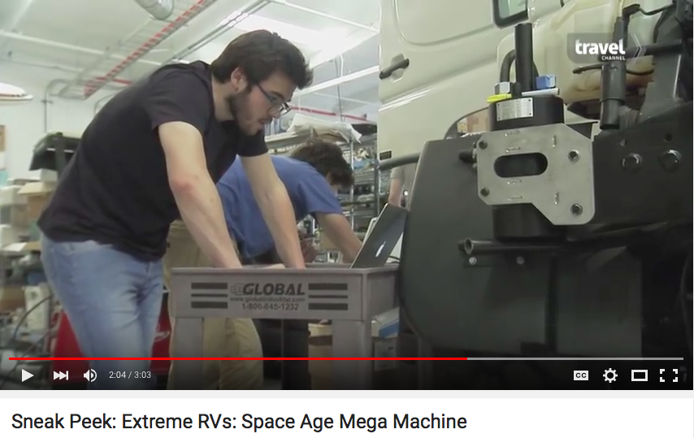
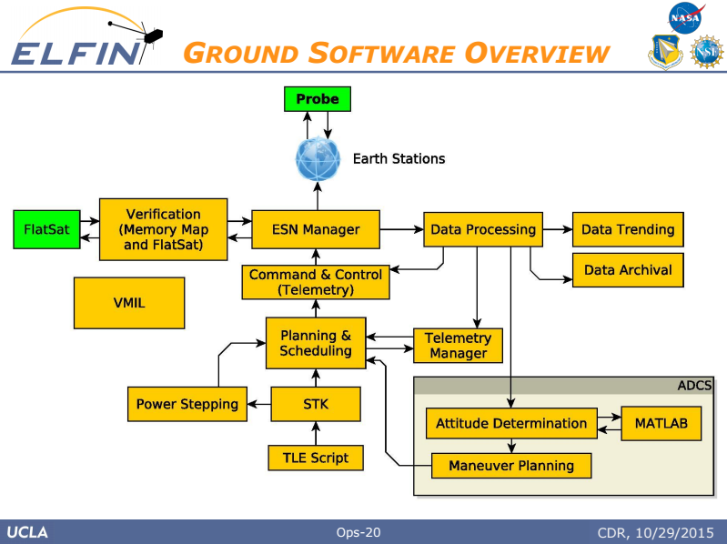
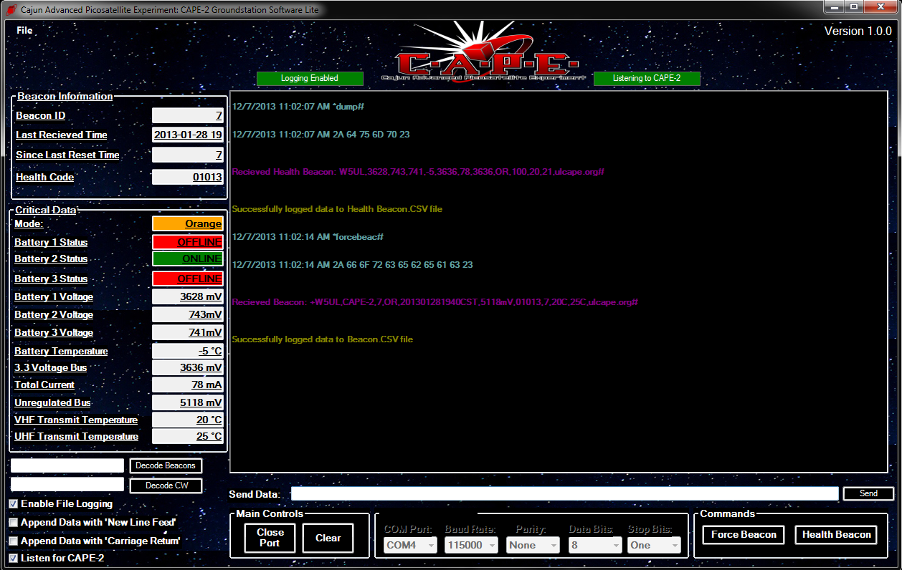

Experiments, experience, etc.
Bronsonschoen@gmail.com
Worked with the Rapid Prototyping Team at Applied Minds to build software for a range of public and not so public projects. Forced a wide variety of sensors to cooperate for prototypes written in Python and C++. Built software to operate the ludicrously extreme KiraVan. There was a lot to keep in mind. Below is me on Travel Channel's Extreme RV's!
Leading the OPS and Earth Station teams for the ELFIN satellite, UCLA’s first microsatellite, designed and built by undergraduates. Currently developing flight procedures and software design for ground based operations, as well as designing and constructing the ground station. Software we write (example) or use:
Built the commanding and telemetry processing portions of the ground station software for the Cajun Advanced Picosatellite Experiment. Designed a breathtaking (by scientific software tool standards) GUI using Visual C#. Download can be found here.
